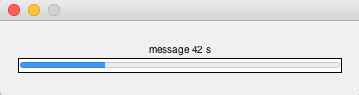
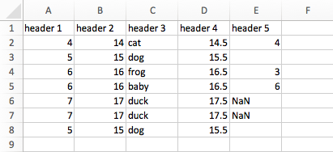
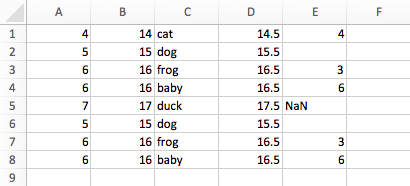

MiscDemo.m
Contents
nansem.m
A function that will calculate the standard error of the mean about a selected dimension of a vector / matrix.
x = magic(5) sem1 = nansem(x) sem2 = nansem(x,2)
x =
17 24 1 8 15
23 5 7 14 16
4 6 13 20 22
10 12 19 21 3
11 18 25 2 9
sem1 =
3.2404 3.6056 4.2426 3.6056 3.2404
sem2 =
3.9370
3.2404
3.6056
3.2404
3.9370
rmspace.m
A helpful function that will remove all spaces / whitespace characters from a string or a cell array of strings
out = rmspace('4 6 34 cat') % string out = rmspace({'H e l lo ', ' W or ld'}) % cell array
out =
4634cat
out =
'Hello' 'World'
timeLeftBar.m
A variant of the wait bar. Displays real time left instead of progress left.
n = 1000; for i = 1:n % === computation here === % rand(2000); timeLeftBar(i, n, 'message'); end

translateTime.m
A convenient function that implements the Workman Time Translation Model to translate time across species. Currently, the function is able to translate for rat, ferret, and human post-conception (pc) or post-natal (pn) days.
translateTime('rat', 2, 'pc');
Using Post-Conception (PC) Days: Event Score = -0.95 RAT: PC = 2, PN = -19 FERRET: PC = 2, PN = -39 HUMAN: PC = 1, PN = -269
xls2struct.m
A function that reads Microsoft Excel spreadsheets and returns a structure with fields that were the headers of the data. Can handle worksheets with headers:

s = xls2struct('xls2structExample.xlsx', 'headers') s.header1
s =
header1: [7x1 double]
header2: [7x1 double]
header3: {7x1 cell}
header4: [7x1 double]
header5: {7x1 cell}
ans =
4
5
6
6
7
7
5
or no headers:

s = xls2struct('xls2structExample.xlsx', 'noheaders') s.header1
s =
header1: [8x1 double]
header2: [8x1 double]
header3: {8x1 cell}
header4: [8x1 double]
header5: {8x1 cell}
ans =
4
5
6
6
7
5
6
6